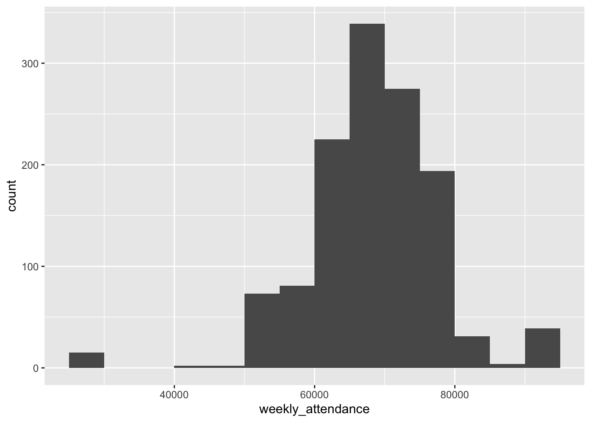
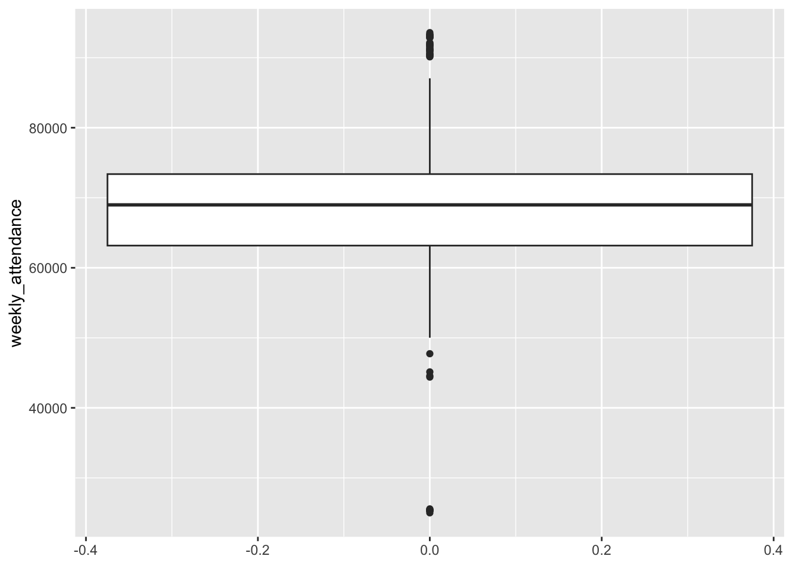
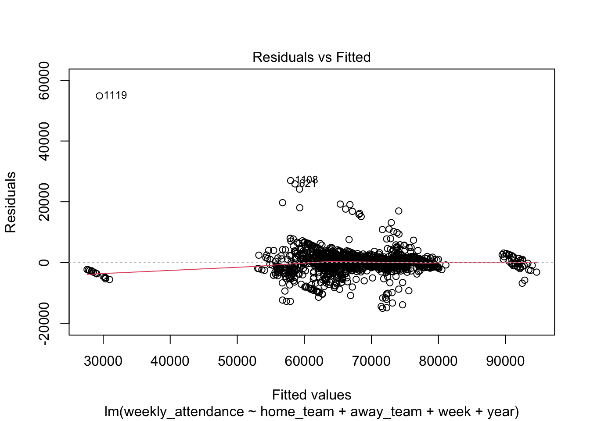

library(readr)
library(stringr)
library(tidyr)
library(dplyr)
library(kknn)
library(probably)
library(readxl)
library(janitor)
library(workflows)
library(workflowsets)
library(recipes)
library(rsample)
library(parsnip)
library(yardstick)
library(tune)
library(ggplot2)
library(tidymodels)
library(naniar)Replace this with an interesting title
Motivation and Context
This section describes what you are investigating in your project and why you are investigating it. You should provide enough contextual background and information that someone with a limited background can understand the broad outlines of the topic being investigated.
I am investigating attendance at NFL games because it is interesting to delve into the many factors that play into why a person would go to a stadium rather than simply watch from home. The time of day, date, loyalty to a team, cost, and rivalries may all play a role. There are also other monetary reasons one should consider investigating future attendance. For instance, given a predicted increase, which isn’t possible due to stadium limitations, renovating stadiums for additional seats may become a priority. In addition, there are dynamic reasons, such as ticket prices and the number of staff, which can change depending on predicted attendance.
The background to understand NFL game attendance is the locations of stadiums and the popularity of teams. While how the game is played is interesting, it isn’t vital to the analysis as long as we know that higher scores are better. There is, however, a simple rating system where 0 is an average team, with above zero being better and below being worse, used to measure the quality of the teams’ offense, defense, and opponents. There is also a bye week for each team where they don’t play, and the data uses the outdated sixteen-game season with eight played at home and the other eight played away. Lastly, changes in team names and locations are important to consider.
Main Objective
The main objective of this project is to predict what the attendance per game would have been in the 2020 season if there wasn’t a COVID-19 restriction.
Packages Used In This Analysis
| Package | Use |
|---|---|
| here | to easily load and save data |
| readr | to import the CSV file data |
| dplyr | to massage and summarize data |
| rsample | to split data into training and test sets |
| ggplot2 | to create nice-looking and informative graphs |
FINISH
Data Description
I am using data on attendance, scores, and other metrics for football teams’ games from 2000 to 2019. It is from a Tidy Tuesday from 02/04/2020, which is a community which posts weekly projects. The data is collected from Pro Football Reference which I am also using, and it was most likely collected through nfl.com as there is a game book which states the attendance as the data matches it. It also states the stadiums which would be useful to scrape and the dates and times are also most likely collected from their. The game book states it is paid attendance which is probably collected based on how many tickets are used to enter the stadium.
Tidy Tuesday https://github.com/rfordatascience/tidytuesday/tree/main/data/2020/2020-02-04
Pro Football Reference https://www.pro-football-reference.com/
NFL Website https://www.nfl.com/
attendance <- readr::read_csv('https://raw.githubusercontent.com/rfordatascience/tidytuesday/main/data/2020/2020-02-04/attendance.csv')
standings <- readr::read_csv('https://raw.githubusercontent.com/rfordatascience/tidytuesday/main/data/2020/2020-02-04/standings.csv')
games <- readr::read_csv('https://raw.githubusercontent.com/rfordatascience/tidytuesday/main/data/2020/2020-02-04/games.csv')
stadiums <- clean_names(read_excel(here::here("Final_Project_Data/Stadiums.xls")))
Attendance_2020 <- clean_names(read_excel(here::here("Final_Project_Data/2020Attendance.xls")))Data Limitations
There are many limitations, such as there not being recorded stadiums, stadium capacity, and the size of the city. There may also be bias in the way that attendance is recorded to make the league seem to have a better performance or for headlines. The methodology that follows also may not be applicable to other sports as the number of games may be vital to whether people attend a game, whether due to fatigue from too many games or better opportunities; however, due to similarities, college football may be applicable. In addition, preseason and playoff data aren’t included; however, the methodology that follows may be applicable to them.
Data Wrangling (Optional Section)
Attendance_2020 <- Attendance_2020 %>%
mutate(across(starts_with("week_"), as.numeric)) %>%
pivot_longer(
cols = starts_with("week_"),
names_prefix = "week_",
names_to = "week",
values_to = "weekly_attendance"
)Warning: There were 9 warnings in `mutate()`.
The first warning was:
ℹ In argument: `across(starts_with("week_"), as.numeric)`.
Caused by warning:
! NAs introduced by coercion
ℹ Run `dplyr::last_dplyr_warnings()` to see the 8 remaining warnings.attendance$newteam <- str_c(attendance$team, attendance$team_name, sep = " ", collapse = NULL)
standings$newteam <- str_c(standings$team, standings$team_name, sep = " ", collapse = NULL)
games$week <- as.numeric(games$week)Warning: NAs introduced by coerciongames <- games %>%
drop_na(week)
data <- games %>%
left_join(attendance, by = c("home_team" = "newteam", "year", "week"))
data <- data %>%
left_join(standings, by = c("home_team" = "newteam", "year", "team", "team_name"))
stadiums <- stadiums %>%
separate_rows(primary_team_s, sep = ",")
stadiums <- stadiums %>%
drop_na(primary_team_s)
stadiums <- stadiums %>%
rowwise() %>%
mutate(year = list(from:to)) %>%
unnest(year) %>%
select(-from, -to)
stadiums <- stadiums %>%
filter(year >= 2000)
stadiums <- stadiums %>%
filter(year <= 2020)
stadiums <- stadiums %>%
distinct(year, primary_team_s, .keep_all = TRUE)
data <- data %>%
left_join(stadiums, by = c("home_team" = "primary_team_s", "year"))data_train <- data %>%
filter(year != 2019)
data_test <- data %>%
filter(year == 2019)Exploratory Data Analysis
attendance %>%
miss_var_summary()# A tibble: 9 × 3
variable n_miss pct_miss
<chr> <int> <num>
1 weekly_attendance 638 5.88
2 team 0 0
3 team_name 0 0
4 year 0 0
5 total 0 0
6 home 0 0
7 away 0 0
8 week 0 0
9 newteam 0 0 count(attendance)/638 n
1 17This corresponds one-to-one to the fact that each team is given one week of the seventeen-week season as a bye week.
data_train %>%
summarize(
number = n(),
weekly_attendance_mean = mean(weekly_attendance, na.rm = TRUE),
weekly_attendance_sd = sd(weekly_attendance, na.rm = TRUE),
weekly_attendance_min = min(weekly_attendance, na.rm = TRUE),
weekly_attendance_q1 = quantile(weekly_attendance, 0.25, na.rm = TRUE),
weekly_attendance_median = median(weekly_attendance, na.rm = TRUE),
weekly_attendance_q3 = quantile(weekly_attendance, 0.75, na.rm = TRUE),
weekly_attendance_max = max(weekly_attendance, na.rm = TRUE)
)# A tibble: 1 × 8
number weekly_attendance_mean weekly_attendance_sd weekly_attendance_min
<int> <dbl> <dbl> <dbl>
1 4848 67609. 8897. 23127
# ℹ 4 more variables: weekly_attendance_q1 <dbl>,
# weekly_attendance_median <dbl>, weekly_attendance_q3 <dbl>,
# weekly_attendance_max <dbl>ggplot(data = data_train,
mapping = aes(x = weekly_attendance)
) +
geom_histogram(center = 57500,
binwidth = 5000)
ggplot(data = data_train,
mapping = aes(y = weekly_attendance)
) +
geom_boxplot()
Through the table, we can get the total number of values, mean, standard deviation, minimum, median, maximum, and the value at the \(25\%\) and \(75%\) of attendance in training data. Through the exact values, we notice that attendance is centered between 63,000 and 73,000 people. In addition, all the values are plausible, as there are no recorded negative or exceedingly high values. The histogram shows no large breaks between different recorded attendances, but as the values get more extreme, there are fewer recorded games with such attendance. The boxplot shows a large number of outliers.
Modeling
lm1 <- lm(weekly_attendance ~ home_team + away_team + week + year, data = data_train)
summary(lm1)
Call:
lm(formula = weekly_attendance ~ home_team + away_team + week +
year, data = data_train)
Residuals:
Min 1Q Median 3Q Max
-37285 -1534 484 2609 55136
Coefficients:
Estimate Std. Error t value Pr(>|t|)
(Intercept) -179456.19 31012.48 -5.787 7.64e-09 ***
home_teamAtlanta Falcons 11795.95 666.82 17.690 < 2e-16 ***
home_teamBaltimore Ravens 14299.53 672.91 21.250 < 2e-16 ***
home_teamBuffalo Bills 10802.96 672.73 16.058 < 2e-16 ***
home_teamCarolina Panthers 16866.56 667.07 25.285 < 2e-16 ***
home_teamChicago Bears 5777.62 666.50 8.669 < 2e-16 ***
home_teamCincinnati Bengals 3853.27 672.82 5.727 1.08e-08 ***
home_teamCleveland Browns 13239.40 672.67 19.682 < 2e-16 ***
home_teamDallas Cowboys 21062.68 666.14 31.619 < 2e-16 ***
home_teamDenver Broncos 19719.57 671.56 29.364 < 2e-16 ***
home_teamDetroit Lions 5729.20 668.62 8.569 < 2e-16 ***
home_teamGreen Bay Packers 15056.33 666.59 22.587 < 2e-16 ***
home_teamHouston Texans 14774.89 691.62 21.363 < 2e-16 ***
home_teamIndianapolis Colts 5528.90 671.90 8.229 2.42e-16 ***
home_teamJacksonville Jaguars 6598.97 672.32 9.815 < 2e-16 ***
home_teamKansas City Chiefs 18480.72 671.56 27.519 < 2e-16 ***
home_teamLos Angeles Chargers -28119.00 1521.98 -18.475 < 2e-16 ***
home_teamLos Angeles Rams 16010.63 1271.88 12.588 < 2e-16 ***
home_teamMiami Dolphins 12149.08 672.88 18.055 < 2e-16 ***
home_teamMinnesota Vikings 6295.67 667.72 9.429 < 2e-16 ***
home_teamNew England Patriots 11041.24 672.95 16.407 < 2e-16 ***
home_teamNew Orleans Saints 13352.03 666.17 20.043 < 2e-16 ***
home_teamNew York Giants 22290.94 665.98 33.471 < 2e-16 ***
home_teamNew York Jets 21549.60 672.58 32.040 < 2e-16 ***
home_teamOakland Raiders -951.57 671.52 -1.417 0.156539
home_teamPhiladelphia Eagles 12034.77 666.60 18.054 < 2e-16 ***
home_teamPittsburgh Steelers 5945.32 672.78 8.837 < 2e-16 ***
home_teamSan Diego Chargers 7037.28 690.10 10.198 < 2e-16 ***
home_teamSan Francisco 49ers 12606.11 663.40 19.002 < 2e-16 ***
home_teamSeattle Seahawks 10638.91 663.34 16.038 < 2e-16 ***
home_teamSt. Louis Rams 4982.99 693.68 7.183 7.85e-13 ***
home_teamTampa Bay Buccaneers 5458.02 666.00 8.195 3.18e-16 ***
home_teamTennessee Titans 11894.06 672.32 17.691 < 2e-16 ***
home_teamWashington Redskins 24135.29 666.59 36.207 < 2e-16 ***
away_teamAtlanta Falcons 970.50 667.23 1.455 0.145869
away_teamBaltimore Ravens 929.84 673.23 1.381 0.167292
away_teamBuffalo Bills 679.67 672.76 1.010 0.312421
away_teamCarolina Panthers 63.31 667.65 0.095 0.924452
away_teamChicago Bears 1959.14 667.02 2.937 0.003328 **
away_teamCincinnati Bengals 323.28 673.28 0.480 0.631140
away_teamCleveland Browns 406.39 673.35 0.604 0.546176
away_teamDallas Cowboys 3158.48 666.80 4.737 2.23e-06 ***
away_teamDenver Broncos 2195.38 671.65 3.269 0.001088 **
away_teamDetroit Lions 1269.47 669.01 1.898 0.057818 .
away_teamGreen Bay Packers 2843.77 666.80 4.265 2.04e-05 ***
away_teamHouston Texans -12.39 691.72 -0.018 0.985705
away_teamIndianapolis Colts 1562.14 671.76 2.325 0.020091 *
away_teamJacksonville Jaguars -154.30 672.74 -0.229 0.818598
away_teamKansas City Chiefs 506.81 671.49 0.755 0.450441
away_teamLos Angeles Chargers 717.78 1522.28 0.472 0.637295
away_teamLos Angeles Rams 1158.26 1271.70 0.911 0.362448
away_teamMiami Dolphins 1623.40 672.49 2.414 0.015815 *
away_teamMinnesota Vikings 1570.97 667.93 2.352 0.018713 *
away_teamNew England Patriots 2932.91 673.52 4.355 1.36e-05 ***
away_teamNew Orleans Saints 1036.38 666.55 1.555 0.120050
away_teamNew York Giants 1342.50 666.38 2.015 0.044001 *
away_teamNew York Jets 1500.36 673.53 2.228 0.025952 *
away_teamOakland Raiders 1654.57 671.86 2.463 0.013826 *
away_teamPhiladelphia Eagles 1576.65 666.68 2.365 0.018073 *
away_teamPittsburgh Steelers 2920.99 673.48 4.337 1.47e-05 ***
away_teamSan Diego Chargers 891.14 690.68 1.290 0.197031
away_teamSan Francisco 49ers 1449.68 663.80 2.184 0.029018 *
away_teamSeattle Seahawks 804.63 663.52 1.213 0.225322
away_teamSt. Louis Rams 620.09 693.50 0.894 0.371283
away_teamTampa Bay Buccaneers 869.28 666.30 1.305 0.192081
away_teamTennessee Titans 1027.05 672.39 1.527 0.126712
away_teamWashington Redskins 641.14 666.73 0.962 0.336294
week -62.41 16.55 -3.772 0.000164 ***
year 117.02 15.43 7.583 4.05e-14 ***
---
Signif. codes: 0 '***' 0.001 '**' 0.01 '*' 0.05 '.' 0.1 ' ' 1
Residual standard error: 5741 on 4779 degrees of freedom
Multiple R-squared: 0.5895, Adjusted R-squared: 0.5837
F-statistic: 100.9 on 68 and 4779 DF, p-value: < 2.2e-16plot(lm1)


linreg_model <- linear_reg(mode = "regression", engine = "lm")
knn_model <- nearest_neighbor(mode = "regression",
engine = "kknn",
neighbors = 8, dist_power = 2)
linear_recipe <- recipe(
weekly_attendance ~ home_team + away_team + week + year, # response ~ predictors
data = data_train
)
quadratic_recipe <- recipe(
weekly_attendance ~ home_team + away_team + week + year, # response ~ predictors
data = data_train
) |>
step_poly(week, degree = 2)
interaction_recipe <- recipe(
weekly_attendance ~ home_team + away_team + week + year, # response ~ predictors
data = data_train
) |>
step_interact(terms = ~week:year) # add HR:BB interaction term
knn_recipe <- recipe(
weekly_attendance ~ home_team + away_team + week + year,
data = data_train
) |>
step_normalize(all_numeric_predictors()) |>
step_dummy(all_nominal_predictors())
all_models <- workflow_set(
preproc = list(linear = linear_recipe, quadratic = quadratic_recipe,
interaction = interaction_recipe, knn = knn_recipe),
models = list(lr = linreg_model, lr = linreg_model,
lr = linreg_model, knn = knn_model),
cross = FALSE # don't mix knn recipes with linear models or vice-versa
)
all_models# A workflow set/tibble: 4 × 4
wflow_id info option result
<chr> <list> <list> <list>
1 linear_lr <tibble [1 × 4]> <opts[0]> <list [0]>
2 quadratic_lr <tibble [1 × 4]> <opts[0]> <list [0]>
3 interaction_lr <tibble [1 × 4]> <opts[0]> <list [0]>
4 knn_knn <tibble [1 × 4]> <opts[0]> <list [0]>set.seed(1112)
data_cv <- vfold_cv(data_train, v = 10)
all_models <- all_models |>
workflow_map("fit_resamples",
resamples = data_cv,
metrics = metric_set(rmse, mae),
verbose = TRUE) # lets you know where you are in the fitting processi 1 of 4 resampling: linear_lr✔ 1 of 4 resampling: linear_lr (385ms)i 2 of 4 resampling: quadratic_lr✔ 2 of 4 resampling: quadratic_lr (430ms)i 3 of 4 resampling: interaction_lr✔ 3 of 4 resampling: interaction_lr (399ms)i 4 of 4 resampling: knn_knn✔ 4 of 4 resampling: knn_knn (13.7s)knn_model2 <- nearest_neighbor(mode = "regression",
engine = "kknn",
neighbors = tune(),
dist_power = 2)
knn.grid <- expand.grid(neighbors = seq(1,20, by = 1))
all_models2 <- workflow_set(
preproc = list(linear = linear_recipe,
quadratic = quadratic_recipe,
interaction = interaction_recipe,
knn = knn_recipe),
models = list(lr = linreg_model,
lr = linreg_model,
lr = linreg_model,
knn2 = knn_model2),
cross = FALSE
)
all_models2 <- all_models2 |>
# add the grid for JUST the knn model
option_add(grid = knn.grid, id = "knn_knn2") |>
workflow_map("tune_grid",
resamples = data_cv,
metrics = metric_set(rmse), # can add more
verbose = TRUE)i No tuning parameters. `fit_resamples()` will be attemptedi 1 of 4 resampling: linear_lr✔ 1 of 4 resampling: linear_lr (432ms)i No tuning parameters. `fit_resamples()` will be attemptedi 2 of 4 resampling: quadratic_lr✔ 2 of 4 resampling: quadratic_lr (429ms)i No tuning parameters. `fit_resamples()` will be attemptedi 3 of 4 resampling: interaction_lr✔ 3 of 4 resampling: interaction_lr (554ms)i 4 of 4 tuning: knn_knn2✔ 4 of 4 tuning: knn_knn2 (41.8s)autoplot(all_models2)
autoplot(all_models2, id = "knn_knn2")
rank_results(all_models2) |>
dplyr::select(wflow_id, .config, .metric, mean, std_err, rank) |>
arrange(.metric, rank)# A tibble: 23 × 6
wflow_id .config .metric mean std_err rank
<chr> <chr> <chr> <dbl> <dbl> <int>
1 linear_lr Preprocessor1_Model1 rmse 5785. 161. 1
2 quadratic_lr Preprocessor1_Model1 rmse 5786. 162. 2
3 interaction_lr Preprocessor1_Model1 rmse 5787. 161. 3
4 knn_knn2 Preprocessor1_Model06 rmse 6526. 197. 4
5 knn_knn2 Preprocessor1_Model05 rmse 6535. 198. 5
6 knn_knn2 Preprocessor1_Model07 rmse 6542. 196. 6
7 knn_knn2 Preprocessor1_Model08 rmse 6569. 194. 7
8 knn_knn2 Preprocessor1_Model04 rmse 6582. 199. 8
9 knn_knn2 Preprocessor1_Model09 rmse 6594. 191. 9
10 knn_knn2 Preprocessor1_Model10 rmse 6616. 188. 10
# ℹ 13 more rowsbest_k <- all_models2 |>
extract_workflow_set_result(id = "knn_knn2") |>
select_best(metric = "rmse")
my_best_knn <- all_models2 |>
extract_workflow("knn_knn2") |>
finalize_workflow(parameters = best_k)
my_best_knn══ Workflow ════════════════════════════════════════════════════════════════════
Preprocessor: Recipe
Model: nearest_neighbor()
── Preprocessor ────────────────────────────────────────────────────────────────
2 Recipe Steps
• step_normalize()
• step_dummy()
── Model ───────────────────────────────────────────────────────────────────────
K-Nearest Neighbor Model Specification (regression)
Main Arguments:
neighbors = 6
dist_power = 2
Computational engine: kknn best_model_refit <- my_best_knn |>
fit_resamples(
resamples = data_cv,
# save the cross-validated predictions
control = control_resamples(save_pred = TRUE)
)
predictions_best_model <- best_model_refit |>
collect_predictions()
cal_plot_regression(
predictions_best_model,
truth = weekly_attendance,
estimate = .pred
)
best_model_refit |>
cal_validate_linear(
save_pred = TRUE,
smooth = TRUE) |> # nonlinear smoothing, use smooth = FALSE for linear transformation
collect_predictions() |>
cal_plot_regression(
truth = weekly_attendance,
estimate = .pred
)
calibrate_knn <- predictions_best_model |>
# instructions for post-processing
cal_estimate_linear(
truth = weekly_attendance,
smooth = TRUE # nonlinear smoothing
)
knn_fit <- my_best_knn |> fit(
data = data_train
)
knn_test_pred2 <- knn_fit |>
augment(new_data = data_test) |>
# apply the post-processing
cal_apply(calibrate_knn)
knn_test_pred2# A tibble: 256 × 43
.pred .resid year week home_team away_team winner tie day date time
<dbl> <dbl> <dbl> <dbl> <chr> <chr> <chr> <chr> <chr> <chr> <tim>
1 63164. 2.58e2 2019 1 Chicago … Green Ba… Green… <NA> Thu Sept… 20:20
2 66532. 1.34e3 2019 1 Clevelan… Tennesse… Tenne… <NA> Sun Sept… 13:00
3 60690. 8.46e3 2019 1 Minnesot… Atlanta … Minne… <NA> Sun Sept… 13:00
4 69544. 3.09e2 2019 1 Philadel… Washingt… Phila… <NA> Sun Sept… 13:00
5 64209. 8.60e3 2019 1 Carolina… Los Ange… Los A… <NA> Sun Sept… 13:00
6 78133. 7.92e2 2019 1 New York… Buffalo … Buffa… <NA> Sun Sept… 13:00
7 60060. 3.60e3 2019 1 Jacksonv… Kansas C… Kansa… <NA> Sun Sept… 13:00
8 67733. -2.47e3 2019 1 Miami Do… Baltimor… Balti… <NA> Sun Sept… 13:00
9 28264. 5.32e0 2019 1 Los Ange… Indianap… Los A… <NA> Sun Sept… 16:05
10 67214. 1.82e3 2019 1 Seattle … Cincinna… Seatt… <NA> Sun Sept… 16:05
# ℹ 246 more rows
# ℹ 32 more variables: pts_win <dbl>, pts_loss <dbl>, yds_win <dbl>,
# turnovers_win <dbl>, yds_loss <dbl>, turnovers_loss <dbl>,
# home_team_name <chr>, home_team_city <chr>, away_team_name <chr>,
# away_team_city <chr>, team <chr>, team_name <chr>, total <dbl>, home <dbl>,
# away <dbl>, weekly_attendance <dbl>, wins <dbl>, loss <dbl>,
# points_for <dbl>, points_against <dbl>, points_differential <dbl>, …treeR_model <- decision_tree(mode = "regression", engine = "rpart",
cost_complexity = tune())
treeR_recipe <- recipe(
weekly_attendance ~ home_team + away_team + week + year, # response ~ predictors
data = data_train
)
treeR_wflow <- workflow() |>
add_model(treeR_model) |>
add_recipe(treeR_recipe)
data_kfold <- vfold_cv(data_train, v = 5, repeats = 3)
treeR_tune1 <- tune_grid(treeR_model,
treeR_recipe,
resamples = data_kfold,
metrics = metric_set(rmse), # ignore r-squared, we get warning messages
grid = grid_regular(cost_complexity(range = c(-3, 0)), levels = 10))
treeR_tune1 |>
collect_metrics() |> # no need to filter for RMSE because it's the only one
ggplot(mapping = aes(x = cost_complexity, y = mean)) +
geom_point() +
geom_line() +
scale_x_log10()
treeR_best <- select_by_one_std_err(
treeR_tune1,
metric = "rmse",
desc(cost_complexity)
)
treeR_best# A tibble: 1 × 2
cost_complexity .config
<dbl> <chr>
1 0.001 Preprocessor1_Model01treeR_wflow_final <- finalize_workflow(treeR_wflow, parameters = treeR_best)
treeR_pred_check <- treeR_wflow_final |>
fit_resamples(
resamples = data_kfold,
# save the cross-validated predictions
control = control_resamples(save_pred = TRUE)
) |>
collect_predictions()
ggplot(treeR_pred_check, aes(x = weekly_attendance, y = .pred)) +
geom_point() +
geom_abline(slope = 1, intercept = 0, color = "blue")